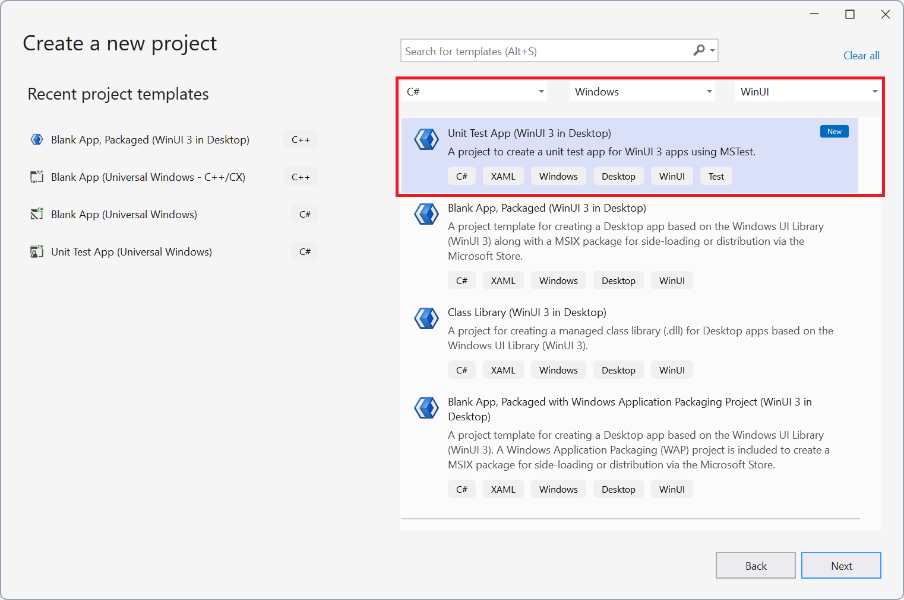

Test apps built with the Windows App SDK and WinUI
In this topic we provide some recommendations for how to test and validate functionality in apps created with the Windows App SDK using Windows UI Library (WinUI) user interface (UI) features.
How do I test WinUI functionality in my app?
Most object types under the Microsoft.UI.Xaml namespaces must be used from a UI thread in a Xaml application process. (For details on testing apps created with Windows App SDK that don't use WinUI, see the following section, How do I test non-WinUI functionality in my app?.)
The following steps describe how to use Visual Studio to test code that depends on Microsoft.UI.Xaml types and executes in the context of a Xaml application:
Create a unit test project in the same solution as the app you want to test. (This uses MSTest to execute the test code and will initialize a Xaml Window and a Xaml UI Thread.)
Right click your solution in Solution Explorer, select Add -> New Project from the context menu, and choose Unit Test App (WinUI 3 in Desktop) for C# or Unit Test App (WinUI 3) for C++.

Mark your test methods with the
[UITestMethod]attribute instead of the standard[TestMethod]attribute to ensure they execute on the UI thread.
Note
We recommend that you refactor any code to be tested by pulling it out of the main app project and placing it into a library project. Both your app project and your unit test project can then reference that library project.
See Unit tests for Windows UI Library (WinUI) apps in Visual Studio for an example of using this test project.
How do I test non-WinUI functionality in my app?
In many cases, an app includes functionality that does not depend on Microsoft.UI.Xaml types but still needs testing. Various tools are available for testing .NET code, including MSTest, NUnit and xUnit. For more details on testing .NET apps, see Testing in .NET.
In Visual Studio, you can create a new project for any of these testing tools by right clicking your solution in Solution Explorer, selecting Add -> New Project from the context menu, choosing C# from the All languages selector/Windows from the All languages selector/Test from the All project types selector, and then picking the appropriate testing tool from the list (MSTest Test Project, NUnit Test Project or xUnit Test Project).
When creating a new MSTest, NUnit or xUnit project that references a WinUI project, you must:
Update the
TargetFrameworkin the .csproj file of your testing project. This value must match theTargetFrameworkin the WinUI project (). By default MSTest, NUnit and xUnit projects target the full range of platforms supported by .NET, but a WinUI project only supports Windows and has a more specific TargetFramework.For example, if targeting .NET 8, update the TargetFramework of the unit test project from
<TargetFramework>net8.0</TargetFramework>to<TargetFramework>net8.0-windows10.0.19041.0</TargetFramework>.Update the RuntimeIdentifiers in your test project.
<RuntimeIdentifiers Condition="$([MSBuild]::GetTargetFrameworkVersion('$(TargetFramework)')) >= 8">win-x86;win-x64;win-arm64</RuntimeIdentifiers><RuntimeIdentifiers Condition="$([MSBuild]::GetTargetFrameworkVersion('$(TargetFramework)')) < 8">win10-x86;win10-x64;win10-arm64</RuntimeIdentifiers>Add the following property to the
PropertyGroupin .csproj file of your test project to ensure that the test loads the WinAppSDK runtime:<WindowsAppSdkBootstrapInitialize>true</WindowsAppSdkBootstrapInitialize>Ensure that the Windows App SDK runtime is installed on the machine running the test. For more information on Windows App SDK deployment, see Windows App SDK deployment guide for framework-dependent apps packaged with external location (or unpackaged).